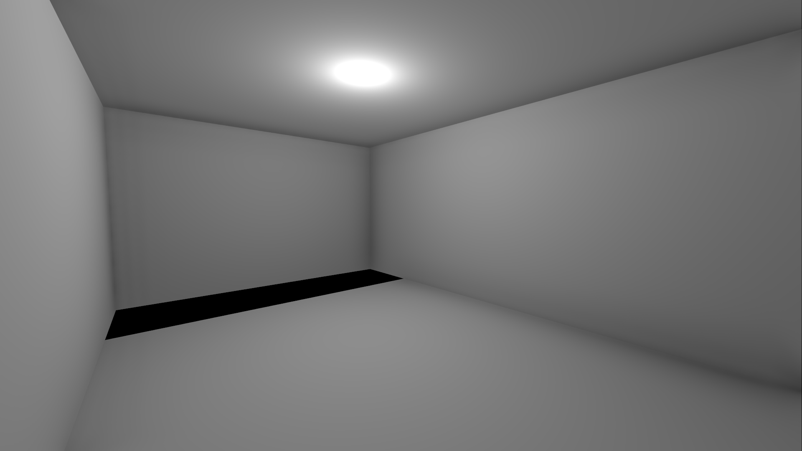
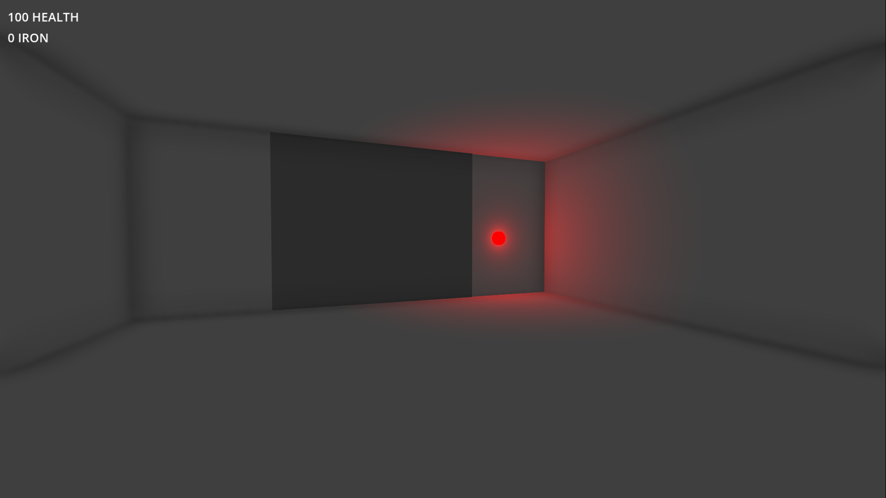
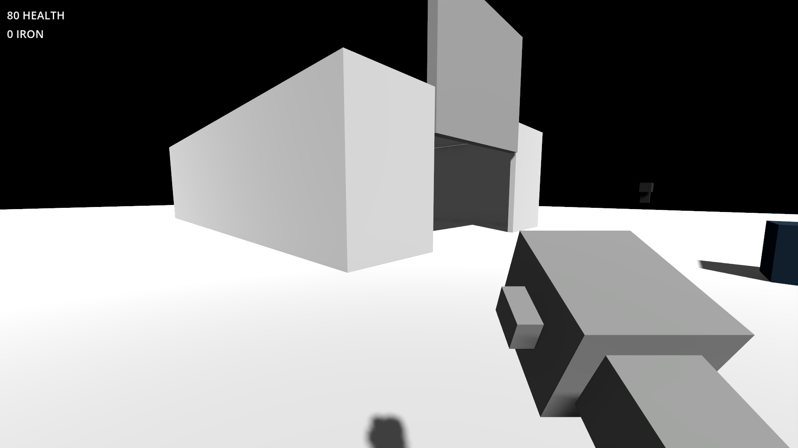

I am not too sure what this game should be yet.
I've recently played Quake so I really want to add a fun combat system but maybe not too FPS focused.
Not long ago I started to think that implementing my own physics (even just simple axis-aligned stuff) is pointless and basically just a distraction from actually making a game.
I also didn't want to implement lighting and shadow maps from scratch for the same reason so I started using R3D for that.
At this point I thought that I might as well just use a full engine and Godot is by far my favorite.
Everything is much more convenient and I can actually focus on what features I want to add.
At first I wanted this to be a factory game (I still think that this might be a good idea, I'm just not sure how to implement it yet).
A roguelike/roguelite but with more stuff to do than just combat could be fun.
I'm not sure why but when I get bored I get a lot of ideas that seem extremely cool but then, the next day, they stop being so vivid.
For example even what I'm writing right now might look like it could've been worded better the next day.
I think the advantage of this is that I basically start thinking in a slightly different way, which could be almost like someone else is giving me feedback or advice.
Or it might just lead to procrastination if I don't actually take action.
I think I prefer the former.

This is an image of the cell that the player is in which, for now, I call "the dungeon". I will expand the story later.
I've made it intentionally simple and the only things that seems a bit less boring is the rectangular hole on the other side of the cell.
By jumping in that hole the player will be teleported into a larger area where there are multiple options. I'll elaborate on this later.
I think this game should have roguelike elements so it's replayable. I also don't want it to be story focused.
I already have some ideas.
A bit off topic but I've been thinking for a while: why am I even making games?
I have several good reasons to believe that it's just something that I like doing in my free time, similar to playing video games.
But here's the interesting thing. I don't make games just because I want to make money from it. In fact I am aware that it's very unlikely.
And yet, here I am!
That's not the only reason though. Almost always I just feel like I have to make a game with a cool idea and fun gameplay. I also really enjoy the actual process of making a game; specifically programming.
Most of my ideas come from getting bored and playing other games. For example if I've played a survival game I might feel like I need to make a roguelike or something replayable.
Of course, I think it would be great if I would make some decent money from this. It's almost the same thing as paying a hardcore cinephile to watch movies; they're probably going to do it, but money wasn't their motivation to begin with. It was simply the activity by itself.
Planning a complex timeline of yourself adding features to your game is redundant. Most things won't play along as you imagine and you will end up disappointed and demotivated.
Add the thing you want to add then if it's fun keep it and if not tweak it or remove it. Don't overthink it.

This is another room with a button and a gate.
And yes, pressing the button just opens the gate but I'll make it more interesting.

Definitely not legal in a boxing match.
Copyright © VladiConcept